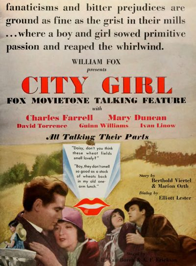

City Girl
Studio: Fox Film Corporation
Starring: Charles Farrell, Mary Duncan, Anne Shirley
Director: F. W. Murnau
Writer: Berthold Viertel, Elliott Lester
Producer: William Fox
City Girl is a 1930 American drama film directed by F. W. Murnau, and starring Charles Farrell and Mary Duncan. It follows a waitress in Chicago who falls in love with a farmer in Minnesota and leaves her life in the city to be with him. It is based upon the play "The Mud Turtle" by Elliot Lester.
Watch Online: Internet Archive
Trivia
- The film's original working title was Our Daily Bread.
- Upon her arrival to shoot the film in August 1928, Duncan was granted the title of Round-Up Queen of the 1928 Pendleton Round-Up rodeo.
- On August 12, 1928, while completing the location scouting, Murnau was hospitalized in Pendleton where he underwent an emergency appendectomy due to appendicitis.
Filming Locations
- Oregon
- City Girl was shot on location in Athena and Pendleton, Oregon.
- Location shooting in Oregon was completed on September 30, 1928, after which interiors were shot on soundstages in Los Angeles in October 1928.
Previous Showings
4 Runs • 2 Festivals
Original Billings: 2 runs (March 22, 1930 - February 10, 1938)
Original Run: March 22, 1930 (Saturday)
All runs on record (4):
- March 22, 1930 (Saturday)Mary Duncan, Charles Farrell
- February 10, 1938 (Thursday - Saturday)Ricardo Cortez, Phyllis Brooks
- September 8, 2004Summer 2004: Sixty-one Classic Movies, including 10 with Ronald Reagan and 9 Silw/ Sunrise
- December 20, 2015Fox Studios through 1935, including Silent Sundaysw/ Lucky Star